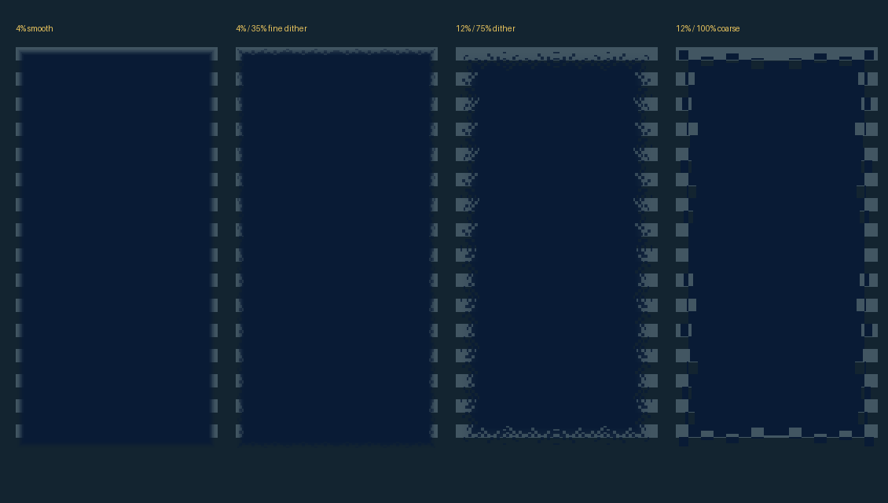

Actual generated alpha masks over a striped scene. Four independent Appearance controls: width, fade curve, dither amount, grain size. Digits/status stay crisp; backing, shader layers, and selected decoration sample the mask.

Dither 0 and curve 1 reproduce the accepted smooth fade. Width 0 restores hard edges. Mask generation happens only after settings change.